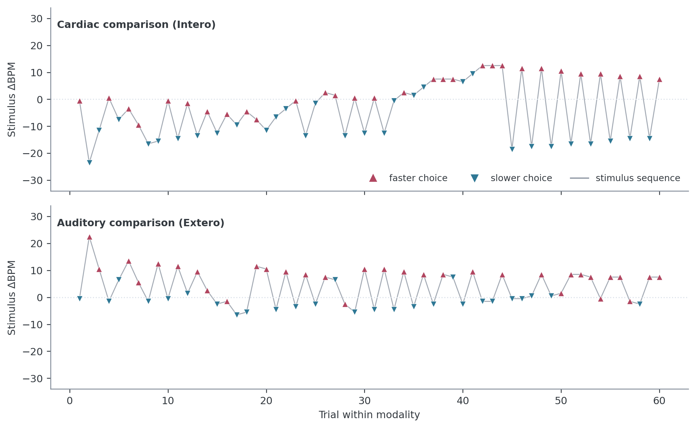
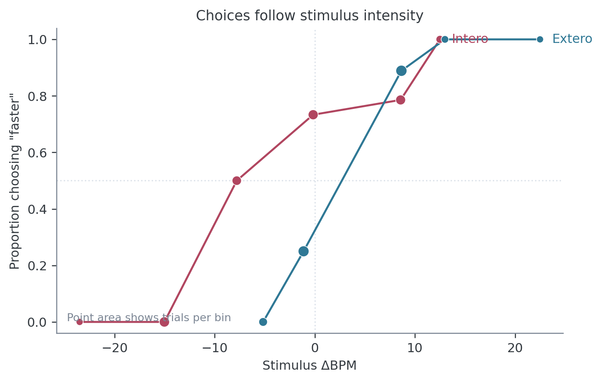
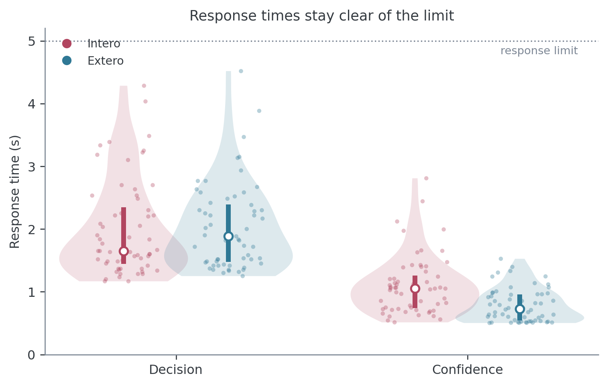
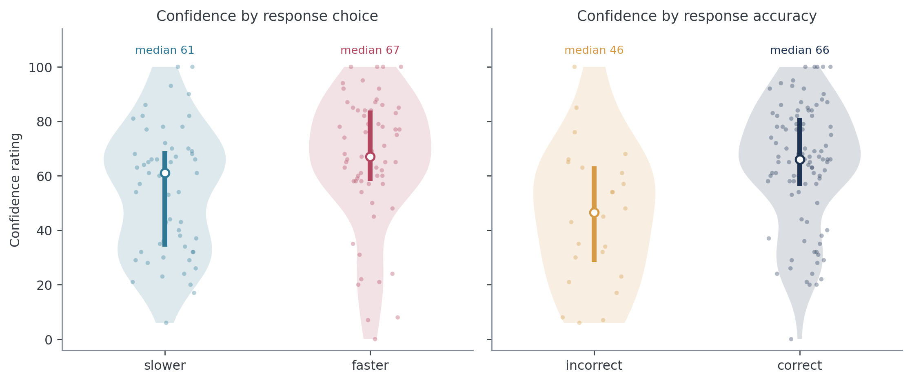
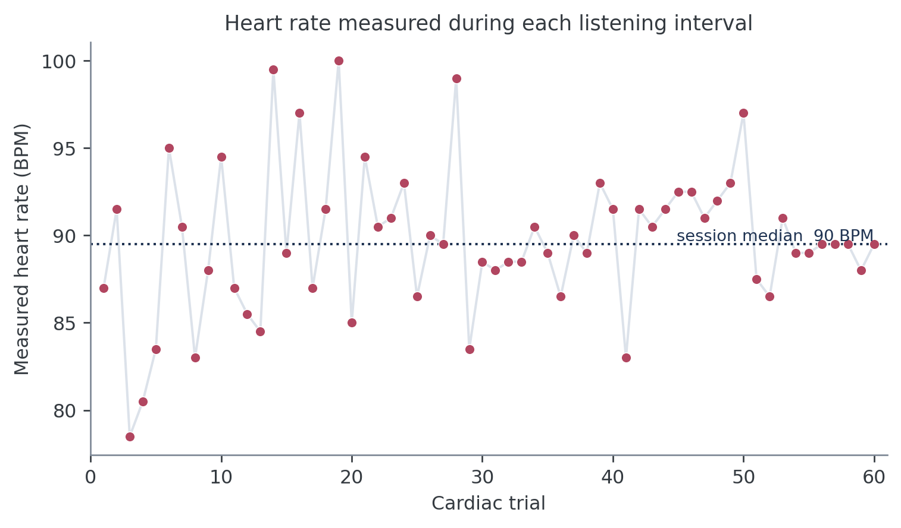
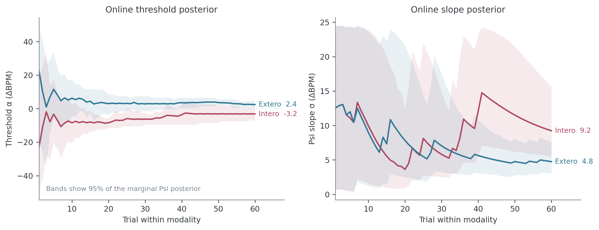
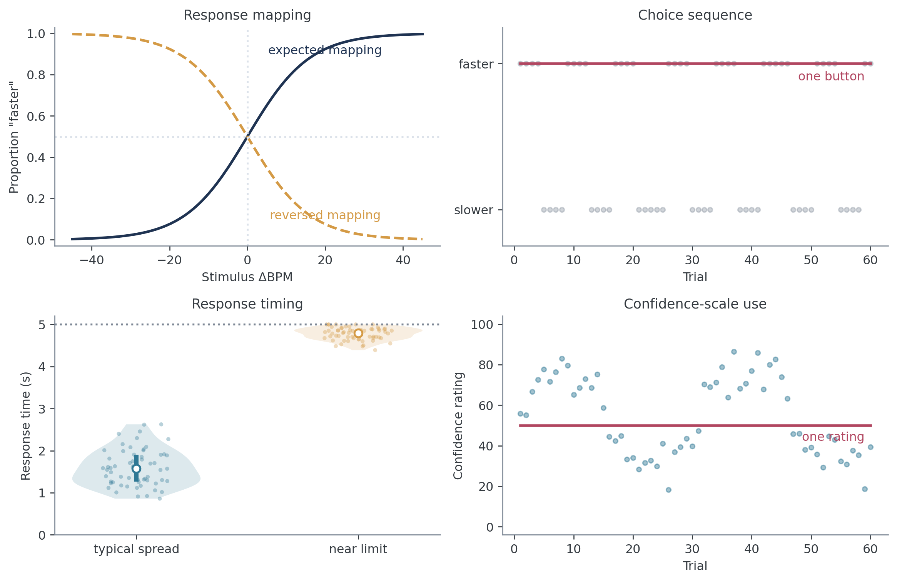
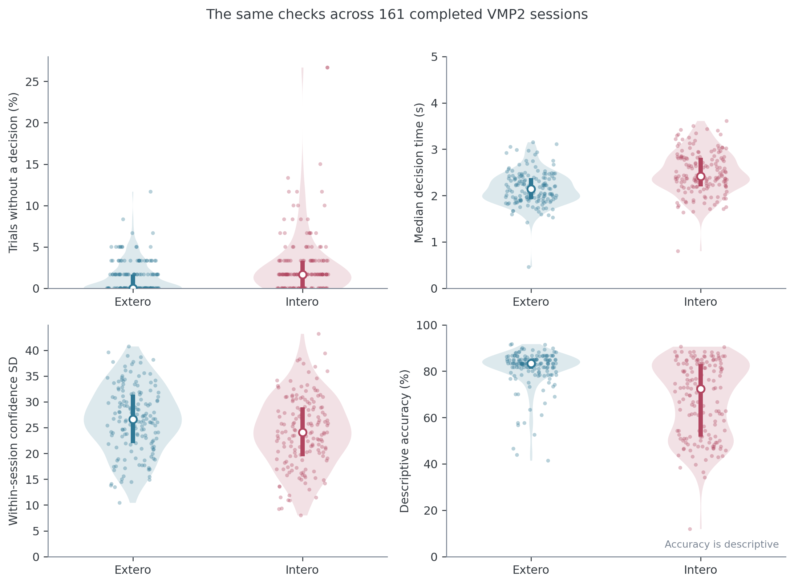

Inspecting and plotting an HRD session#
Author: Micah G. Allen
While your study is running, you should be able to open a participant’s folder and understand the session within a few minutes. This is especially important during piloting, when an error in the instructions or response mapping can affect every participant who follows.
The checks on this page establish whether the task completed, whether the participant used the response and confidence scales sensibly, and whether the adaptive procedure obtained informative data. They are descriptive checks. Any exclusion rule should be decided for the study, documented, and applied without reference to the result one hopes to obtain.
The figures use a deidentified participant from the VMP2 study who completed the current Psi-only design. You can download the example session and run the code against it.
Files in a participant folder#
For a participant named 0341 in a session named HRD, a completed folder may
contain files like these:
0341HRD/
├── 0341HRD.txt
├── 0341HRD_final.txt
├── 0341Intero_posterior.npy
├── 0341Extero_posterior.npy
├── 0341_signal.txt
├── 0341_ppg_20.txt
└── 0341_parameters.pickle
The raw trial log is 0341HRD.txt. It has no _raw suffix. Cardioception
rewrites this file after every trial, which makes it the recovery copy if a
session is interrupted. On normal completion, the same trial table is written
as 0341HRD_final.txt. Prefer the _final.txt file when it exists.
File |
What it contains |
Use during collection |
|---|---|---|
|
Rolling trial-level log |
Recover an interrupted session |
|
Completed trial-level log |
Main file for the checks on this page |
|
Joint Psi posterior after each adaptive trial |
Check uncertainty and parameter-grid boundaries |
|
PPG samples collected during cardiac listening intervals, with trial numbers |
Investigate suspicious trial-level heart rates |
|
Pulse-oximeter segments saved at breaks and at the end |
Inspect the physiological recording in detail |
|
Parameters used for that session |
Confirm the intended task settings |
File names depend on the participant and session labels passed to
getParameters(). Match them by suffix rather than assuming a fixed prefix.
The trial table#
The final file is comma-separated despite its .txt extension. Each row is one
trial. We can read the columns in a few functional groups.
Role |
Columns |
Interpretation |
|---|---|---|
Design |
|
Staircase type, cardiac or auditory condition, and zero-based trial number |
Stimulus |
|
Reference frequency, comparison frequency, and their difference in ΔBPM |
Behaviour |
|
Choice, objective accuracy, and confidence from 0 to 100 |
Completion |
|
Whether each response was made and how long it took |
Online Psi |
|
Running means of the Psi threshold and slope posteriors |
Event times |
|
Computer timestamps for events within the trial |
Three distinctions prevent a great deal of confusion:
AlphaisresponseBPM - listenBPM. Positive values mean the comparison tones were faster than the reference.Decisionrecords which response the participant made.Morecorresponds to a “faster” response andLessto a “slower” response.ResponseCorrectcompares that decision with the sign ofAlpha. The psychometric model uses the decision itself because its response probability must increase with stimulus intensity.
EstimatedThreshold and EstimatedSlope belong to the online staircase. They
help us inspect a session and are not participant outcomes for group analysis.
Open one completed session#
Start with one file and preserve its trial order. Choose Python or R below. The same language remains selected in the tab sets that follow.
from pathlib import Path
import pandas as pd
session_file = Path("data/0341HRD/0341HRD_final.txt")
data = pd.read_csv(session_file).sort_values("nTrials")
data["Trial"] = data["nTrials"] + 1
print(data.shape)
data[["Trial", "Modality", "Alpha", "Decision"]].head()
(120, 23)
Trial Modality Alpha Decision
0 1 Extero -0.5 Less
1 2 Intero -0.5 More
2 3 Intero -23.5 Less
3 4 Intero -11.5 Less
4 5 Extero 22.5 More
library(tidyverse)
session_file <- "data/0341HRD/0341HRD_final.txt"
data <- read_csv(session_file, show_col_types = FALSE) |>
arrange(nTrials) |>
mutate(Trial = nTrials + 1)
dim(data)
data |>
select(Trial, Modality, Alpha, Decision) |>
head()
[1] 120 23
# A tibble: 5 × 4
Trial Modality Alpha Decision
<dbl> <chr> <dbl> <chr>
1 1 Extero -0.5 Less
2 2 Intero -0.5 More
3 3 Intero -23.5 Less
4 4 Intero -11.5 Less
5 5 Extero 22.5 More
The example contains 120 rows and 23 columns. Your row count should match the
nTrials setting used for that study. The package default is 120, but it is not
a universal quality threshold.
Check that the session completed#
Before drawing a figure, count rows, trial numbers, modalities, and missing responses.
session_check = pd.Series(
{
"rows": len(data),
"unique trial numbers": data["nTrials"].nunique(),
"duplicate trial numbers": data["nTrials"].duplicated().sum(),
"missing decisions": (~data["DecisionProvided"]).sum(),
"missing ratings": (~data["RatingProvided"]).sum(),
}
)
print(session_check)
by_modality = data.groupby("Modality").agg(
trials=("nTrials", "size"),
decisions=("DecisionProvided", "sum"),
ratings=("RatingProvided", "sum"),
)
print(by_modality)
rows 120
unique trial numbers 120
duplicate trial numbers 0
missing decisions 0
missing ratings 0
trials decisions ratings
Modality
Extero 60 60 60
Intero 60 60 60
tibble(
check = c(
"rows", "unique trial numbers", "duplicate trial numbers",
"missing decisions", "missing ratings"
),
value = c(
nrow(data), n_distinct(data$nTrials), sum(duplicated(data$nTrials)),
sum(!data$DecisionProvided), sum(!data$RatingProvided)
)
)
data |>
group_by(Modality) |>
summarise(
trials = n(), decisions = sum(DecisionProvided),
ratings = sum(RatingProvided), .groups = "drop"
)
# A tibble: 5 × 2
check value
<chr> <int>
1 rows 120
2 unique trial numbers 120
3 duplicate trial numbers 0
4 missing decisions 0
5 missing ratings 0
# A tibble: 2 × 4
Modality trials decisions ratings
<chr> <int> <int> <int>
1 Extero 60 60 60
2 Intero 60 60 60
The worked session has 60 trials in each modality and no missing responses. Ratings are not presented when the decision is missing, so the two missingness counts will often move together.
A missed decision has no psychophysical response. Leave it missing and remove
it from later modelling. Recoding it as Less or as an incorrect response would
invent an observation.
Plot the stimulus and response trace#
The stimulus trace is the most informative first plot. Separate the two modalities because each has its own Psi staircase. Within each modality, count trials in the order they occurred.
import matplotlib.pyplot as plt
data["adaptive_trial"] = data.groupby("Modality").cumcount() + 1
data["choice"] = data["Decision"].map({"More": "faster", "Less": "slower"})
fig, axes = plt.subplots(2, 1, figsize=(8, 5), sharex=True, sharey=True)
for ax, modality in zip(axes, ["Intero", "Extero"]):
d = data[data["Modality"] == modality]
ax.plot(d["adaptive_trial"], d["Alpha"], color="0.7", linewidth=1)
for choice, marker, colour in [
("faster", "^", "#B14660"),
("slower", "v", "#2F7895"),
]:
q = d[d["choice"] == choice]
ax.scatter(q["adaptive_trial"], q["Alpha"], marker=marker,
color=colour, label=choice)
ax.axhline(0, color="0.8", linestyle=":")
ax.set(title=modality, ylabel="Stimulus ΔBPM")
axes[-1].set_xlabel("Trial within modality")
axes[0].legend(frameon=False)
plt.tight_layout()
trace <- data |>
group_by(Modality) |>
mutate(
adaptive_trial = row_number(),
choice = recode(Decision, More = "faster", Less = "slower")
) |>
ungroup()
ggplot(trace, aes(adaptive_trial, Alpha)) +
geom_hline(yintercept = 0, colour = "grey80", linetype = "dotted") +
geom_line(colour = "grey70") +
geom_point(aes(colour = choice, shape = choice), size = 2) +
facet_wrap(~ Modality, ncol = 1) +
scale_colour_manual(values = c(faster = "#B14660", slower = "#2F7895")) +
labs(x = "Trial within modality", y = "Stimulus ΔBPM") +
theme_classic()

This participant’s choices change with ΔBPM in both conditions. The cardiac staircase explores mostly negative values early and alternates between positive and negative regions later. The alternation is a consequence of selecting informative stimuli for both threshold and slope. A healthy Psi trace does not have to become flat.
Traces deserve investigation when they remain at a stimulus boundary, contain large stretches with no valid response, or show little correspondence between stimulus intensity and choice. Movement alone is expected.
Relate choices to stimulus intensity#
The staircase trace shows when each stimulus was presented. The response plot asks whether increasing ΔBPM produced more “faster” choices. This is the relationship that the psychometric function will model.
The plot below bins intensity for display. Point area records the number of trials in each bin, which matters because an adaptive staircase samples the range unevenly.
import numpy as np
import seaborn as sns
valid = data[data["Decision"].isin(["More", "Less"])].copy()
valid["faster"] = valid["Decision"].eq("More").astype(int)
valid["intensity_bin"] = pd.cut(
valid["Alpha"], bins=np.arange(-44, 45, 8), include_lowest=True
)
response_plot = (
valid.groupby(["Modality", "intensity_bin"], observed=True)
.agg(
intensity=("Alpha", "mean"),
proportion_faster=("faster", "mean"),
trials=("faster", "size"),
)
.reset_index()
)
sns.lineplot(
data=response_plot, x="intensity", y="proportion_faster",
hue="Modality", marker="o",
)
plt.axhline(0.5, color="0.8", linestyle=":")
plt.xlabel("Stimulus ΔBPM")
plt.ylabel('Proportion choosing "faster"')
response_plot <- data |>
filter(Decision %in% c("More", "Less")) |>
mutate(
faster = as.integer(Decision == "More"),
intensity_bin = cut_width(Alpha, width = 8, boundary = 0)
) |>
group_by(Modality, intensity_bin) |>
summarise(
intensity = mean(Alpha),
proportion_faster = mean(faster),
trials = n(),
.groups = "drop"
)
ggplot(response_plot, aes(intensity, proportion_faster, colour = Modality)) +
geom_hline(yintercept = 0.5, colour = "grey80", linetype = "dotted") +
geom_line() +
geom_point(aes(size = trials)) +
labs(x = "Stimulus ΔBPM", y = "Proportion \"faster\"") +
theme_classic()

The two response curves rise from left to right in the worked session. Their horizontal displacement is scientifically meaningful. A participant can use the response mapping consistently while having a threshold away from zero.
Binning is useful for this picture only. Keep the exact Alpha values when you
fit a model.
Accuracy is a secondary description#
Accuracy is worth printing because it can reveal a gross instruction or response mapping problem.
data.groupby("Modality")["ResponseCorrect"].agg(["count", "mean"])
count mean
Modality
Extero 60 0.833333
Intero 60 0.766667
data |>
group_by(Modality) |>
summarise(trials = sum(!is.na(ResponseCorrect)),
accuracy = mean(ResponseCorrect, na.rm = TRUE))
# A tibble: 2 × 3
Modality trials accuracy
<chr> <int> <dbl>
1 Extero 60 0.833
2 Intero 60 0.767
The worked participant was correct on 77% of cardiac trials and 83% of auditory trials. These values describe the session without defining successful HRD performance. Psi concentrates trials around the point of subjective equality; it does not target a fixed proportion correct. Bias therefore changes which side of objective zero the participant sees most often.
Inspect response times#
Plot decision and confidence response times together so that their different time scales remain visible. Individual trials should remain visible beneath the distributions.
The current defaults allow 5 seconds for each response and require at least 0.5 seconds for a confidence rating.
rt = data.melt(
id_vars=["Modality"],
value_vars=["DecisionRT", "ConfidenceRT"],
var_name="response", value_name="seconds",
).dropna()
sns.violinplot(data=rt, x="response", y="seconds", hue="Modality",
inner="quart", cut=0)
sns.stripplot(data=rt, x="response", y="seconds", hue="Modality",
dodge=True, palette={"Intero": "#B14660", "Extero": "#2F7895"},
alpha=0.25)
plt.axhline(5, color="0.5", linestyle=":")
handles, labels = plt.gca().get_legend_handles_labels()
plt.legend(handles[:2], labels[:2], frameon=False)
rt <- data |>
pivot_longer(c(DecisionRT, ConfidenceRT),
names_to = "response", values_to = "seconds") |>
filter(!is.na(seconds))
ggplot(rt, aes(response, seconds, fill = Modality)) +
geom_violin(position = position_dodge(width = 0.8), trim = TRUE) +
geom_point(
aes(colour = Modality), alpha = 0.25,
position = position_jitterdodge(jitter.width = 0.08, dodge.width = 0.8)
) +
geom_hline(yintercept = 5, colour = "grey50", linetype = "dotted") +
labs(x = NULL, y = "Response time (s)") +
theme_classic()

Look for a pile-up near the response limit, many missing responses, or a sharp change after a break. Very short response times can indicate anticipatory key presses. Slow responses can reflect genuine difficulty or accessibility needs, so investigate the session context before defining any exclusion.
Inspect confidence in two ways#
A confidence histogram answers whether the participant used the slider. Two comparisons are more informative during piloting. Separating confidence by choice can expose a response-linked confidence bias. Separating it by objective accuracy gives a first descriptive view of whether confidence tracked trial outcome.
valid["choice"] = valid["Decision"].map({"More": "faster", "Less": "slower"})
valid["accuracy"] = valid["ResponseCorrect"].map(
{True: "correct", False: "incorrect"}
)
fig, axes = plt.subplots(1, 2, figsize=(8, 3.5), sharey=True)
for ax, column, order in [
(axes[0], "choice", ["slower", "faster"]),
(axes[1], "accuracy", ["incorrect", "correct"]),
]:
sns.violinplot(data=valid, x=column, y="Confidence", order=order,
inner="quart", cut=0, ax=ax)
sns.stripplot(data=valid, x=column, y="Confidence", order=order,
color="0.25", alpha=0.3, ax=ax)
axes[0].set_title("Confidence by response choice")
axes[1].set_title("Confidence by response accuracy")
valid <- data |>
filter(Decision %in% c("More", "Less"), !is.na(Confidence)) |>
mutate(
choice = recode(Decision, More = "faster", Less = "slower"),
accuracy = factor(ResponseCorrect, levels = c(FALSE, TRUE),
labels = c("incorrect", "correct"))
)
choice_plot <- ggplot(valid, aes(choice, Confidence)) +
geom_violin(fill = "grey90", colour = NA, trim = TRUE) +
geom_jitter(width = 0.08, alpha = 0.3) +
theme_classic()
accuracy_plot <- ggplot(valid, aes(accuracy, Confidence)) +
geom_violin(fill = "grey90", colour = NA, trim = TRUE) +
geom_jitter(width = 0.08, alpha = 0.3) +
theme_classic()

In this session, median confidence was 61 after “slower” choices and 67 after “faster” choices. The larger difference is between incorrect and correct trials, with medians of 46 and 66. Keep the individual observations in view because a mean or median cannot show whether the participant used only one point on the scale.
Also record scale usage and mass at the bounds:
print(f"Unique ratings: {valid['Confidence'].nunique()}")
print(f"At 0 or 100: {valid['Confidence'].isin([0, 100]).mean():.1%}")
Unique ratings: 65
At 0 or 100: 5.8%
n_distinct(valid$Confidence)
mean(valid$Confidence %in% c(0, 100))
[1] 65
[1] 0.05833333
Seven ratings in the worked session, or 5.8%, lie exactly at 0 or 100. Bound responses are valid uses of the scale. Formal analysis retains them with ordered beta regression, as explained in the metacognition tutorial.
Check the trial-level heart rate#
For cardiac trials, listenBPM is the heart rate estimated during the listening
interval. A quick trace can reveal gross recording problems before you inspect
the PPG itself.
heart = data[data["Modality"] == "Intero"]
sns.lineplot(data=heart, x="adaptive_trial", y="listenBPM", marker="o")
plt.xlabel("Cardiac trial")
plt.ylabel("Measured heart rate (BPM)")
data |>
filter(Modality == "Intero") |>
mutate(adaptive_trial = row_number()) |>
ggplot(aes(adaptive_trial, listenBPM)) +
geom_line() + geom_point() +
labs(x = "Cardiac trial", y = "Measured heart rate (BPM)") +
theme_classic()

Sudden jumps, repeated boundary values, or an implausibly flat trace justify a
closer look at *_signal.txt and the saved PPG segments. Trial-level heart rate
cannot show whether individual pulse peaks were detected correctly. It is a
screening plot rather than a signal-quality analysis.
As a basic consistency check, responseBPM - listenBPM should equal Alpha:
np.allclose(data["responseBPM"] - data["listenBPM"], data["Alpha"])
True
all.equal(data$responseBPM - data$listenBPM, data$Alpha)
[1] TRUE
Inspect the Psi posterior#
The two _posterior.npy files retain the joint probability distribution over
threshold and slope after every trial. The trial table contains the corresponding
posterior means in EstimatedThreshold and EstimatedSlope.
At the beginning of this session, most of the parameter grid remains plausible. The posterior narrows as responses accumulate. After 60 trials per modality, the online means are -3.2 ΔBPM for the cardiac threshold and +2.4 ΔBPM for the auditory threshold. The online Psi slope, denoted \(\sigma\), ends at 9.2 ΔBPM for cardiac trials and 4.8 ΔBPM for auditory trials.
Larger \(\sigma\) means a shallower response transition and poorer discrimination.
The offline brms model uses a different slope parameterization; the
psychophysical model tutorial explains the conversion.
For a quick point-estimate plot in either language:
for modality, d in data.groupby("Modality"):
plt.plot(d["adaptive_trial"], d["EstimatedThreshold"], label=modality)
plt.axhline(0, color="0.8", linestyle=":")
plt.xlabel("Trial within modality")
plt.ylabel("Online threshold estimate (ΔBPM)")
plt.legend(frameon=False)
data |>
group_by(Modality) |>
mutate(adaptive_trial = row_number()) |>
ggplot(aes(adaptive_trial, EstimatedThreshold, colour = Modality)) +
geom_hline(yintercept = 0, colour = "grey80", linetype = "dotted") +
geom_line() +
labs(x = "Trial within modality",
y = "Online threshold estimate (ΔBPM)") +
theme_classic()

The shaded intervals in the tutorial figure come from the .npy arrays. The
reproducible code is in tutorials/plot_inspecting_data.py.
The posterior centre can move sharply after an informative response, and its uncertainty need not shrink on every trial. More concerning patterns include a threshold posterior that remains pressed against the -50.5 or +50.5 ΔBPM grid boundary, or a slope posterior that retains substantial mass at the upper 25 ΔBPM boundary near the end of the session.
Use these quantities to diagnose stimulus placement and parameter-range
problems. Fit the raw choices and exact intensities for scientific inference.
Do not compare final EstimatedThreshold or EstimatedSlope values in a group
test.
Recognize patterns that need follow-up#
Quality-control plots are most useful when we know what would count as unusual. The examples below are schematic, so that the pattern is easier to see than it would be in a noisy single session.

The expected response curve rises with ΔBPM. If it falls consistently, first
check that More and Less were decoded correctly in the analysis. If the code
is correct, review the response mapping and the participant’s account of the
instructions. A displaced but still rising curve can reflect a genuine
perceptual bias and should not be mistaken for reversed buttons.
A session containing almost entirely one choice is also worth opening. It may reflect a misunderstood instruction, an unregistered key, or disengagement. The same applies when confidence remains at one rating throughout the task. In both cases, check the trial log and acquisition notes before deciding what the pattern means.
Response times clustered against the configured limit suggest that the response window may have been too short or that the participant struggled with the task. An unusually slow participant is not automatically invalid. The useful question is whether responses were recorded reliably and whether the timing matches what happened during the session.
Finally, inspect responses at the largest absolute values of Alpha. With the
current default grid, Alpha runs from -50.5 to +50.5 ΔBPM. A “slower” response
at approximately +50 ΔBPM is unlikely, but one such trial can be an ordinary
lapse. Repeated contradictions at both ends of the range, or a response curve
that decreases with intensity, provide stronger evidence of a mapping problem.
responseBPM = 120 records an absolute comparison-tone rate, not a difference
of 120 BPM. The relevant difference from the reference appears in Alpha.
These plots generate questions rather than exclusions. Decide exclusion rules before the main analysis, and preserve the raw pattern that motivated each rule.
Review sessions as data accumulate#
Once several participants have completed the task, pool the final files and compare the same session-level summaries. This helps find unusual sessions while there is still time to inspect the acquisition notes.
files = sorted(Path("data").glob("**/*_final.txt"))
frames = []
for file in files:
frame = pd.read_csv(file)
frame["Subject"] = file.parent.name
frame["source_file"] = str(file)
frames.append(frame)
study = pd.concat(frames, ignore_index=True)
study["missed_decision"] = ~study["DecisionProvided"]
session_summary = (
study.groupby(["Subject", "source_file", "Modality"])
.agg(
trials=("nTrials", "size"),
missed_decisions_percent=("missed_decision", lambda x: 100 * x.mean()),
median_decision_rt=("DecisionRT", "median"),
confidence_sd=("Confidence", "std"),
accuracy_percent=("ResponseCorrect", lambda x: 100 * x.mean()),
)
.reset_index()
)
summary_long = session_summary.melt(
id_vars=["Subject", "Modality"],
value_vars=[
"missed_decisions_percent", "median_decision_rt",
"confidence_sd", "accuracy_percent",
],
var_name="metric", value_name="value",
)
sns.catplot(
data=summary_long, x="Modality", y="value",
col="metric", col_wrap=2, sharey=False,
kind="strip", alpha=0.45,
)
files <- list.files(
"data", pattern = "_final\\.txt$", recursive = TRUE, full.names = TRUE
)
study <- map_dfr(files, function(file) {
read_csv(file, show_col_types = FALSE) |>
mutate(Subject = basename(dirname(file)), source_file = file)
})
session_summary <- study |>
group_by(Subject, source_file, Modality) |>
summarise(
trials = n(),
missed_decisions_percent = 100 * mean(!DecisionProvided),
median_decision_rt = median(DecisionRT, na.rm = TRUE),
confidence_sd = sd(Confidence, na.rm = TRUE),
accuracy_percent = 100 * mean(ResponseCorrect, na.rm = TRUE),
.groups = "drop"
)
summary_long <- session_summary |>
pivot_longer(
c(
missed_decisions_percent, median_decision_rt,
confidence_sd, accuracy_percent
),
names_to = "metric", values_to = "value"
)
ggplot(summary_long, aes(Modality, value, colour = Modality)) +
geom_jitter(width = 0.12, alpha = 0.45) +
facet_wrap(~ metric, scales = "free_y") +
guides(colour = "none") +
labs(x = NULL, y = NULL) +
theme_classic()

This figure contains 161 completed, Psi-only VMP2 sessions. Each point represents one participant and modality. Most sessions have few missed decisions, while a small number stand well outside the main distribution. Those points tell us which trial traces and session notes to inspect first. They do not define an automatic exclusion threshold. Accuracy remains descriptive because Psi does not target a fixed proportion correct.
A practical collection checklist#
These checks form a useful specification for a future automated report.
Question |
Evidence to inspect |
|---|---|
Did the task finish? |
|
Were responses recorded? |
|
Did choices use the stimulus information? |
Stimulus trace and proportion “faster” across ΔBPM |
Was timing appropriate? |
Decision and confidence response-time distributions relative to configured limits |
Was the confidence scale used? |
Unique values, mass at 0 and 100, distributions by choice and accuracy |
Did cardiac measurement look plausible? |
|
Did Psi learn within its grid? |
Threshold and slope trajectories with posterior intervals and boundary checks |
The legacy cardioception.reports.preprocessing and
cardioception.reports.report helpers are being deprecated. They mix quality
control with outdated analysis choices, so this tutorial does not use them. A
rebuilt report can later automate the checks above while keeping the trial data
and diagnostic plots visible.
The next tutorial explains what the psychophysical model measures and fits one participant’s trial-level responses.